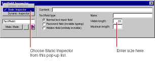

All WebObjects elements have a
dynamic inspector, that is, one that allows you to set bindings (you'll work with bindings in the next section). In addition, many WebObjects elements (those with direct counterparts in static HTML) also have a
static inspector. This inspector allows you to set the standard HTML attributes for that type of element.
In this panel, you can set various attributes of the static counterpart of a WOTextField, which is an HTML <INPUT TYPE=TEXT> element.
In the Visible length field, enter 20 to set the width of the text field to 20 characters.
Repeat steps 1 through 3 for the E-mail field.
Select the multi-line text area.
In the Text Area Inspector, you can set various attributes corresponding to those of a <TEXTAREA> element.
Increase the size of the element by specifying the number of columns and number of rows to, say, 30 and 6.
Save the Main component.
© 1999 Apple Computer, Inc. – (Last Updated 24 Aug 99)